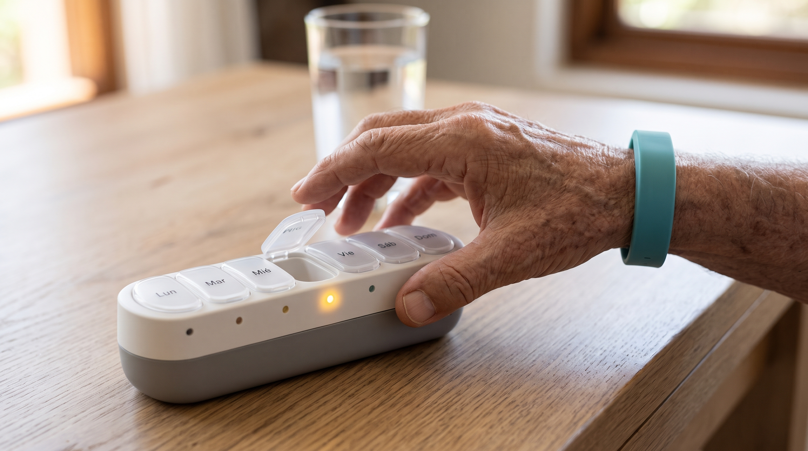
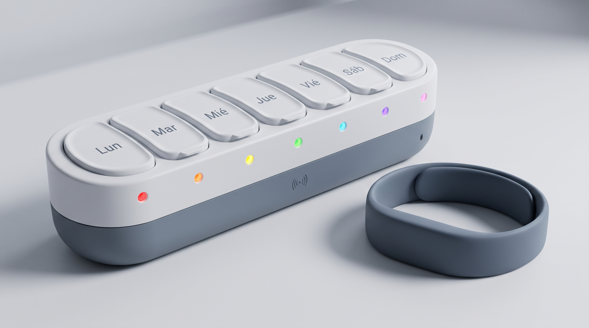

Evita la doble toma y cuida a quienes más quieres, sin complicarles la vida.
MediSync es el primer pastillero semanal con doble seguro de acceso: permanece bloqueado mecánicamente hasta la hora exacta y solo se abre al acercar una pulsera RFID liviana, sin pantallas ni baterías que cargar.
Pago único sin suscripciones mensuales • Incluye pastillero, pulsera RFID y batería.


Pensado para manos con artritis y cero estrés tecnológico
Aviso visual y sonoro claro: A la hora configurada, se ilumina el LED del día correspondiente (Lun a Dom) acompañado de una alerta suave.
Desbloqueo sin fuerza ni botones: Al acercar la pulsera pasiva al lector RFID, el servomotor libera el seguro y la tapa ergonómica se abre fácilmente.
Verificación infrarroja anti-doble toma: El sensor IR detecta el retiro de la dosis y vuelve a bloquear el compartimento automáticamente.
Mira cómo configurar y usar MediSync en 1 minuto
Aprende a vincular tu pastillero por Bluetooth desde esta web y revisar el desbloqueo con la pulsera.
Espacio reservado para tu Video Tutorial
Sube tu video a YouTube (incluso en modo "No listado") y pega el enlace en la etiqueta <iframe> de esta sección.
¿Por qué elegir MediSync?
Compara nuestra solución frente a las alternativas del mercado.
| Característica | MediSync ($29.990) | Pastillero Plástico Común | Dispensadores Importados |
|---|---|---|---|
| Bloqueo físico anti-sobredosis | Sí (Servomotor + RFID) | No (Cualquiera lo abre) | Sí |
| Verificación real de retiro de dosis | Sí (Sensor Infrarrojo) | No | Solo caída por gravedad |
| Pulsera sin batería ni pantallas | Sí (RFID pasivo 13,56 MHz) | No incluye | No (Usa apps complejas) |
| Cambio de horarios desde la web | Sí (Vía Bluetooth directo) | No aplica | Sí |
| Costo y suscripciones | $29.990 pago único | $3.000 – $8.000 | $120.000+ y mensualidades |
Preguntas Frecuentes
¿Qué pasa si el adulto mayor necesita cambiar la hora de un remedio después de comprarlo? +
Es muy simple: cualquier familiar entra a esta misma página web en la pestaña "Configurar Pastillero", presiona "Conectar por Bluetooth" estando cerca del pastillero y guarda el nuevo horario. El reloj interno del dispositivo se actualiza al instante.
¿Hay que cargar la pulsera identificadora? +
No. La pulsera utiliza un chip RFID pasivo de 13,56 MHz (similar a una tarjeta Bip! o llave de acceso), por lo que es resistente al agua, liviana y nunca necesita cargarse ni cambiar pilas.
¿Qué ocurre si se corta la luz en la casa? +
MediSync funciona con batería interna autónoma de 9V y su reloj de tiempo real (RTC DS3231) tiene pila de respaldo propia, por lo que nunca pierde la hora ni deja de funcionar ante cortes eléctricos.
¿Se pueden registrar varias tomas en un mismo día? +
Sí. Puedes programar múltiples horarios para cada día de la semana desde tu panel de configuración según la receta médica del paciente.